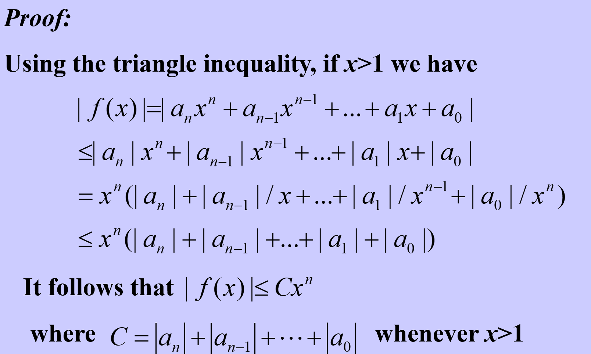
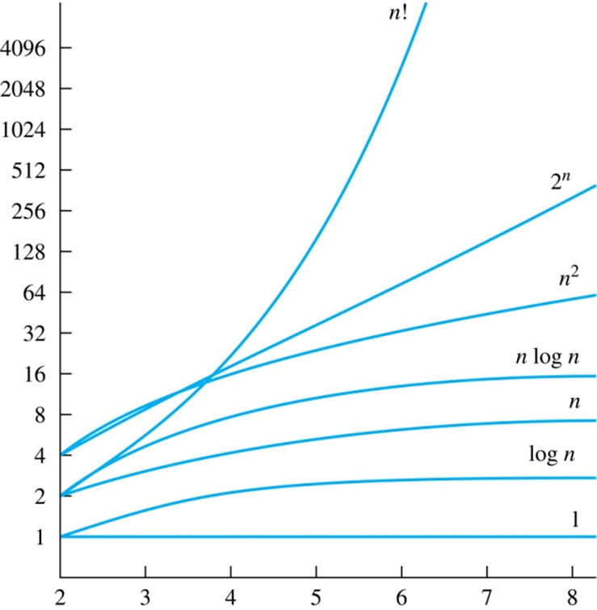

<!DOCTYPE HTML>
<html lang="" >
    <head>
        <meta charset="UTF-8">
        <meta content="text/html; charset=utf-8" http-equiv="Content-Type">
        <title>CH03_01_Algorithms · CoderFAN 资料库</title>
        <meta http-equiv="X-UA-Compatible" content="IE=edge" />
        <meta name="description" content="">
        <meta name="generator" content="GitBook 6.0.3">
        <meta name="author" content="Todd Lyu">
        
        
    
    <link rel="stylesheet" href="gitbook/style.css">

    
            
                
                <link rel="stylesheet" href="gitbook/gitbook-plugin-highlight/website.css">
                
            
                
                <link rel="stylesheet" href="gitbook/gitbook-plugin-expandable-chapters-small/expandable-chapters-small.css">
                
            
                
                <link rel="stylesheet" href="gitbook/gitbook-plugin-back-to-top-button/plugin.css">
                
            
                
                <link rel="stylesheet" href="gitbook/gitbook-plugin-code/plugin.css">
                
            
                
                <link rel="stylesheet" href="gitbook/gitbook-plugin-highlight/website.css">
                
            
        

    

    
        
    
        
    
        
    
        
    
        
    
        
    

        
    
    
    <meta name="HandheldFriendly" content="true"/>
    <meta name="viewport" content="width=device-width, initial-scale=1, user-scalable=no">
    <meta name="apple-mobile-web-app-capable" content="yes">
    <meta name="apple-mobile-web-app-status-bar-style" content="black">
    <link rel="apple-touch-icon-precomposed" sizes="152x152" href="gitbook/images/apple-touch-icon-precomposed-152.png">
    <link rel="shortcut icon" href="gitbook/images/favicon.ico" type="image/x-icon">

    
    
    <!-- MathJax 配置：唯一且完整 -->
<script>
    window.MathJax = {
      tex: {
        inlineMath:  [['$', '$'], ['\\(', '\\)']],
        displayMath: [['$$','$$'], ['\\[','\\]']],
        processEscapes: true,
        processEnvironments: true,
        strict: "ignore",
        macros: { "\\E":"\\mathbb{E}", "\\Var":"\\operatorname{Var}" }
      },
    };
    </script>
    
    <!-- 核心脚本（defer不阻塞渲染） -->
    <script defer src="https://cdn.jsdelivr.net/npm/mathjax@3/es5/tex-chtml.js"></script>
    
    <!-- 放在 tex-chtml.js 之后 -->
    <script>
    (function () {
      function typeset() {
        if (window.MathJax && MathJax.typesetPromise) {
          MathJax.typesetPromise().catch(console.error);
        }
      }
    
      /* 第一次正文插入 */
      document.addEventListener('DOMContentLoaded', typeset);
    
      /*   关键：等待 gitbook.js 初始化成功   */
      function hookGitBook() {
        if (window.gitbook && gitbook.events) {
          gitbook.events.bind('page.change', typeset);   // 切章排版
        } else {
          /* gitbook.js 还没加载完 → 100 ms 后再试 */
          setTimeout(hookGitBook, 100);
        }
      }
      hookGitBook();   // 启动递归等待
    })();
    </script>
    
    

    </head>
    <body>
        
<div class="book honkit-cloak">
    <div class="book-summary">
        
            
            
                <nav role="navigation">
                <a href=".." class="btn"><b></b>&#128512;返回上层&#128512;</b></a>
                


<ul class="summary">
    
    

    

    
        
        
    
        <li class="chapter " data-level="1.1" data-path="./">
            
                <a href="./">
            
                    
                    Introduction
            
                </a>
            

            
        </li>
    
        <li class="chapter " data-level="1.2" >
            
                <span>
            
                    
                    --CH03_Algorithms--
            
                </span>
            

            
            <ul class="articles">
                
    
        <li class="chapter active" data-level="1.2.1" data-path="CH03_01_Algorithms.html">
            
                <a href="CH03_01_Algorithms.html">
            
                    
                    CH03_01_Algorithms
            
                </a>
            

            
        </li>
    

            </ul>
            
        </li>
    

    

    <li class="divider"></li>

    <li>
        <a href="https://www.gitbook.com" target="blank" class="gitbook-link">
            Published with GitBook
        </a>
    </li>
</ul>


                </nav>
            
        
    </div>

    <div class="book-body">
        
            <div class="body-inner">
                
                    

<div class="book-header" role="navigation">
    

    <!-- Title -->
    <h1>
        <i class="fa fa-circle-o-notch fa-spin"></i>
        <a href="." >CH03_01_Algorithms</a>
    </h1>
</div>


                    <div class="page-wrapper" tabindex="-1" role="main">
                        <div class="page-inner">
                            
                                <section class="normal markdown-section">
                                
                                <font size="6"> Chaptcer 03 Algorithms 算法</font>

<p>covering 3.1~3.3</p>
<hr></hr>
<h1 id="definition-定义">Definition 定义</h1>
<p>An <strong>algorithm</strong> is a <strong>finite</strong> set of precise instructions for performing a computation or for solving a problem.</p>
<p><strong>Pseudocode</strong>（伪代码）: Instructions given in a generic language similar to a computer language such as C++ or Pascal.</p>
<p>e.g. A pseudocode description of the algorithm for finding the maximum element in a finite sequence follows.</p>
<pre><code class="lang-pseudocode">procedure  max(a1, a2, ..., an :integers)
max := a1
for i := 2 to n
    if max &lt; ai then max:= ai
return max{max is the largest element}
</code></pre>
<h1 id="properties-属性">Properties 属性</h1>
<ul>
<li><p>Input : An algorithm has input values from a specified set.</p>
</li>
<li><p>Output : From each set of input values, an algorithm produces output values from a specified set.</p>
</li>
<li><p>Definiteness : The steps of an algorithm must be defined precisely.</p>
</li>
<li><p>Correctness : An algorithm should produce the correct output values for each set of  input values.</p>
</li>
<li><p>Finiteness : An algorithm should produce the desired output after a finite number of steps for any input in the set.</p>
</li>
<li><p>Effectiveness: Each step of an algorithm must be executed exactly and in a finite amount of time.</p>
</li>
<li><p>Generality : The procedure should be applicable for all problems of the desired form, not just for a particular set of input values.</p>
</li>
</ul>
<h1 id="examples-算法举例">Examples 算法举例</h1>
<h2 id="searching-algorithms-查找算法">Searching Algorithms 查找算法</h2>
<h3 id="linear-search-or-sequential-search-线性查找">Linear Search or sequential search 线性查找</h3>
<h3 id="binary-search-二分查找">Binary Search 二分查找</h3>
<h2 id="sorting-排序算法">Sorting 排序算法</h2>
<h2 id="optimization-problem-最优化问题">Optimization problem 最优化问题</h2>
<h3 id="greedy-algorithm-贪心算法">Greedy Algorithm 贪心算法</h3>
<p>Algorithms that make what seems to be “best” choice at each step</p>
<h1 id="halting-problem-停机问题">Halting Problem 停机问题</h1>
<p>Can we develop a procedure that takes as input a computer program along with its input and determines whether the program will eventually halt with that input.</p>
<p></img></p>
<h1 id="the-growth-of-functions-函数的增长">The Growth of Functions 函数的增长</h1>
<blockquote>
<p>Factors to be considered for choosing an algorithm</p>
<ul>
<li>Simplicity - Easy to implement and obviously correct</li>
<li>Clarity - Easy to read and to maintain</li>
<li>Extensibility - Can easily be extended to new tasks</li>
<li>Reusability - Can be adapted to different tasks</li>
<li>Efficiency - Uses time and space well (computation complexity)</li>
</ul>
</blockquote>
<h2 id="asymptotic-running-time-渐进运行时间">Asymptotic Running Time 渐进运行时间</h2>
<p>A rough measurement of the running  time of an algorithm based on the <strong>input size</strong></p>
<ul>
<li><p>Gives you the relative rate of growth but not specific time of execution</p>
</li>
<li><p>Allows for comparison of algorithms without implementation</p>
</li>
<li><p>Not hardware specific</p>
</li>
</ul>
<p><strong>Asymptotic running time</strong> : the number of operations used by the algorithm as the input size approaches infinity</p>
<h2 id="big-o-notation-大o记号">Big-O Notation 大O记号</h2>
<p>“f(x) is O(g(x))” if there are constants <em>C</em> and <em>k</em> such that |<em>f</em>(<em>x</em>)| ≤ <em>C| g</em>(<em>x</em>)| whenever <em>x</em> &gt; <em>k</em>.</p>
<p>The constants C and k in the definition of big-O notation are called <strong>witnesses</strong>（<strong>凭证</strong>） to the relationship f (x) is O(g(x)).</p>
<p></img></p>
<blockquote>
<ol>
<li>Equivalent expressions: $f(x)=O(g(x))$ $f(x)\in O(g(x))$</li>
<li>The pair (C,k) is <strong>never</strong> unique</li>
<li>When f(x) is O(g(x)) , and h(x) is a function that has larger absolute values than g(x) does for sufficiently large values of x, it follows that f(x) is O(h(x)) </li>
</ol>
</blockquote>
<p></img></p>
<blockquote>
<p>If we have two standards, then two functions f(x) and g(x) that satisfy both of these big-O relationships are of the same order.</p>
<p>if a is the Big-O of b, then b grows faster.</p>
</blockquote>
<h3 id="some-important-big-o-results">Some Important Big-O Results</h3>
<p>Let $f(x)=a<em>nx^n+a</em>{n-1}x^{n-1}+...+a_1x+a_0$, where $a_i(i=1,2,3,...)$ are real numbers, then f(x) is $O(x^n)$</p>
<p></img></p>
<p></img></p>
<h2 id="growth-of-combinations-of-functions">Growth of Combinations of Functions</h2>
<h3 id="addition-of-functions">Addition of functions</h3>
<p>If $f_1(x)$ is $O(g_1(x))$ and  $f_2(x)$ is $O(g_2(x))$, then  $(f_1+f_2)(x)$  is  $O(max(g_1(x),g_2(x)))$</p>
<h3 id="multiplication-of-functions">Multiplication of functions</h3>
<p>If $f_1(x)$ is $O(g_1(x))$ and  $f_2(x)$ is $O(g_2(x))$, then $(f_1f_2)(x)$ is $O(g_1(x)g_2(x))$</p>
<h2 id="big-omega-and-big-theta-notation">Big-Omega and Big-Theta Notation</h2>
<p>$f(x)$ is $\Omega(g(x))$ if there are constants <em>C</em> and <em>k</em> such that $|f(x)|\geq C|g(x)|$ whenever <em>x</em> &gt; <em>k</em>.</p>
<p></img></p>
<p>$f(x)$ is $\Theta(g(x))$ if $f(x)$ is $O(g(x))$ and $f(x)$ is $\Omega(g(x))$</p>
<blockquote>
<p>$f(x)$ is $\Theta(g(x))$ when there are real numbers $C_1$ and $C_2$ and a positive real number <em>k</em> such that</p>
<p>$C_1|g(x)|\leq|f(x)|\leq C_2|g(x)|$</p>
</blockquote>
<p></img></p>
<h1 id="complexity-of-algorithms-算法复杂度">Complexity of Algorithms 算法复杂度</h1>
<h2 id="space-complexity-空间复杂度">Space Complexity 空间复杂度</h2>
<p>Gives the approximate amount of memory required to solve a problem of size n.</p>
<p>Often tied in with the particular data structures used to implement the algorithm</p>
<h2 id="time-complexity-时间复杂度">Time Complexity 时间复杂度</h2>
<p>Gives the approximate number of operations required to solve a problem of size n.</p>
<h2 id="different-types-of-analysis-复杂度分析">Different types of analysis 复杂度分析</h2>
<h3 id="worst-case-analysis-最坏情形">Worst-case analysis 最坏情形</h3>
<ul>
<li><p>Maximum number of operations</p>
</li>
<li><p>Is a guarantee over all inputs of a given size</p>
</li>
</ul>
<h3 id="best-case-analysis-最好情形">Best-case analysis 最好情形</h3>
<ul>
<li><p>Minimum number of operations</p>
</li>
<li><p>Not very practical</p>
</li>
</ul>
<h3 id="average-case-analysis-平均情形">Average-case analysis 平均情形</h3>
<ul>
<li><p>Average number of operations assuming an input probability distribution</p>
</li>
<li><p>An average over all the possible inputs of a given size</p>
</li>
<li><p>Can be complicated</p>
</li>
</ul>
<h1 id="understanding-the-complexity-of-algorithm">Understanding the complexity of algorithm</h1>
<p><strong>Tractable</strong>（<strong>易解的</strong>）: A problem is solvable using an algorithm with polynomial worst-case complexity. </p>
<p><strong>Intractable</strong>（<strong>难解的</strong>）: A problem cannot be solved using an algorithm with worst-case polynomial time complexity.</p>
<p><strong>Solvable</strong>（<strong>可解</strong>）</p>
<p><strong>Unsolvable</strong>（<strong>不可解</strong>）: Some problems even exist for which it can be shown that no algorithm exists for solving them. </p>
<h2 id="pnp">P&amp;NP</h2>
<p><strong>Class P</strong>（<strong>P类问题</strong>）: tractable problems</p>
<p><strong>Class NP</strong> (nondeterministic polynomial time（非确定性多项式时间）)（<strong>NP类</strong>）: problems for which a solution can be checked in polynomial time. </p>
<p><strong>NP-complete</strong>（<strong>NP完全问题</strong>）:  an important class of problems with the property that if any of these problems can be solved by a polynomial worst-case time algorithm, then all can be solved by polynomial worst-case time algorithms.</p>
<p><strong>The P versus NP problem</strong>（<strong>P与NP问题</strong>） asks whether NP, the class of problems for which it is possible
to check solutions in polynomial time, equals P, the class of tractable problems. If P=NP, there
would be some problems that cannot be solved in polynomial time, but whose solutions could
be verified in polynomial time.</p>
<blockquote>
<p>P与NP问题有点类似非对称加密，无法直接解密，但是可以快速验证答案真伪</p>
</blockquote>
<table>
<thead>
<tr>
<th style="text-align:center">Complexity</th>
<th style="text-align:center">Terminology</th>
</tr>
</thead>
<tbody>
<tr>
<td style="text-align:center">$\Theta(1)$</td>
<td style="text-align:center">Constant complexity 常量复杂度</td>
</tr>
<tr>
<td style="text-align:center">$\Theta(log\ n)$</td>
<td style="text-align:center">Logarithmic complexity 对数复杂度</td>
</tr>
<tr>
<td style="text-align:center">$\Theta(n)$</td>
<td style="text-align:center">Linear complexity 线性复杂度</td>
</tr>
<tr>
<td style="text-align:center">$\Theta(n\ log\ n)$</td>
<td style="text-align:center">Linearithmic complexity 线性对数复杂度</td>
</tr>
<tr>
<td style="text-align:center">$\Theta(n^b)$</td>
<td style="text-align:center">Polynomial complexity 多项式复杂度</td>
</tr>
<tr>
<td style="text-align:center">$\Theta(b^n),b&gt;1$</td>
<td style="text-align:center">Exponential complexity 指数复杂度</td>
</tr>
<tr>
<td style="text-align:center">$\Theta(n!)$</td>
<td style="text-align:center">Factorial complexity 阶乘复杂度</td>
</tr>
</tbody>
</table>

                                
                                </section>
                            
                        </div>
                    </div>
                
            </div>

            
                
                
            
        
    </div>

    <script>
        var gitbook = gitbook || [];
        gitbook.push(function() {
            gitbook.page.hasChanged({"page":{"title":"CH03_01_Algorithms","level":"1.2.1","depth":2,"previous":{"title":"--CH03_Algorithms--","level":"1.2","depth":1,"ref":"","articles":[{"title":"CH03_01_Algorithms","level":"1.2.1","depth":2,"path":"CH03_01_Algorithms.md","ref":"CH03_01_Algorithms.md","articles":[]}]},"dir":"ltr"},"config":{"plugins":["-search","-livereload","-lunr","-fontsettings","highlight","expandable-chapters-small","back-to-top-button","github","code","theme-default"],"styles":{"website":"styles/website.css","pdf":"styles/pdf.css","epub":"styles/epub.css","mobi":"styles/mobi.css","ebook":"styles/ebook.css","print":"styles/print.css"},"pluginsConfig":{"highlight":{"lang":{"eval_rst":"rst","toc":"text"}},"github":{"url":"https://github.com/KittenCN"},"expandable-chapters-small":{},"back-to-top-button":{},"code":{"copyButtons":true},"theme-default":{"styles":{"website":"styles/website.css","pdf":"styles/pdf.css","epub":"styles/epub.css","mobi":"styles/mobi.css","ebook":"styles/ebook.css","print":"styles/print.css"},"showLevel":false}},"theme":"default","author":"Todd Lyu","pdf":{"pageNumbers":true,"fontSize":12,"fontFamily":"Arial","paperSize":"a4","chapterMark":"pagebreak","pageBreaksBefore":"/","margin":{"right":62,"left":62,"top":56,"bottom":56},"embedFonts":false},"structure":{"langs":"LANGS.md","readme":"README.md","glossary":"GLOSSARY.md","summary":"SUMMARY.md"},"variables":{},"title":"CoderFAN 资料库","gitbook":"*"},"file":{"path":"CH03_01_Algorithms.md","mtime":"2025-04-22T03:00:22.424Z","type":"markdown"},"gitbook":{"version":"6.0.3","time":"2025-05-05T05:23:25.197Z"},"basePath":".","book":{"language":""}});
        });
    </script>
</div>

        
    <noscript>
        <style>
            .honkit-cloak {
                display: block !important;
            }
        </style>
    </noscript>
    <script>
        // Restore sidebar state as critical path for prevent layout shift
        function __init__getSidebarState(defaultValue){
            var baseKey = "";
            var key = baseKey + ":sidebar";
            try {
                var value = localStorage[key];
                if (value === undefined) {
                    return defaultValue;
                }
                var parsed = JSON.parse(value);
                return parsed == null ? defaultValue : parsed;
            } catch (e) {
                return defaultValue;
            }
        }
        function __init__restoreLastSidebarState() {
            var isMobile = window.matchMedia("(max-width: 600px)").matches;
            if (isMobile) {
                // Init last state if not mobile
                return;
            }
            var sidebarState = __init__getSidebarState(true);
            var book = document.querySelector(".book");
            // Show sidebar if it enabled
            if (sidebarState && book) {
                book.classList.add("without-animation", "with-summary");
            }
        }

        try {
            __init__restoreLastSidebarState();
        } finally {
            var book = document.querySelector(".book");
            book.classList.remove("honkit-cloak");
        }
    </script>
    <script src="gitbook/gitbook.js"></script>
    <script src="gitbook/theme.js"></script>
    
        
        <script src="gitbook/gitbook-plugin-expandable-chapters-small/expandable-chapters-small.js"></script>
        
    
        
        <script src="gitbook/gitbook-plugin-back-to-top-button/plugin.js"></script>
        
    
        
        <script src="gitbook/gitbook-plugin-code/plugin.js"></script>
        
    

    </body>
</html>

